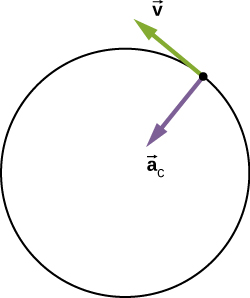
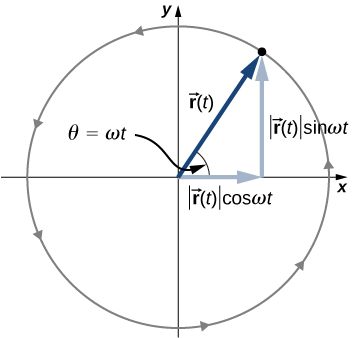
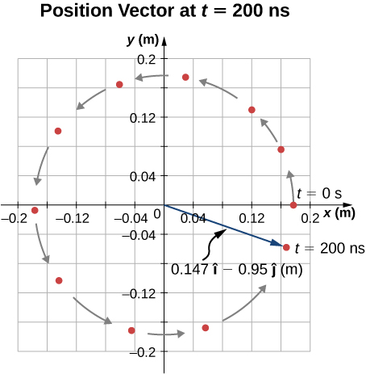
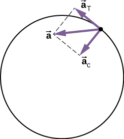

Solve for the centripetal acceleration of an object moving on a circular path.
Use the equations of circular motion to find the position, velocity, and acceleration of a particle executing circular motion.
Explain the differences between centripetal acceleration and tangential acceleration resulting from nonuniform circular motion.
Evaluate centripetal and tangential acceleration in nonuniform circular motion, and find the total acceleration vector.
Uniform circular motion is a specific type of motion in which an object travels in a circle with a constant speed. For example, any point on a propeller spinning at a constant rate is executing uniform circular motion. Other examples are the second, minute, and hour hands of a watch. It is remarkable that points on these rotating objects are actually accelerating, although the rotation rate is a constant. To see this, we must analyze the motion in terms of vectors.
Centripetal Acceleration
In one-dimensional kinematics, objects with a constant speed have zero acceleration. However, in two- and three-dimensional kinematics, even if the speed is a constant, a particle can have acceleration if it moves along a curved trajectory such as a circle. In this case the velocity vector is changing, or This is shown in [link]. As the particle moves counterclockwise in time on the circular path, its position vector moves from to The velocity vector has constant magnitude and is tangent to the path as it changes from to changing its direction only. Since the velocity vector is perpendicular to the position vector the triangles formed by the position vectors and and the velocity vectors and are similar. Furthermore, since and the two triangles are isosceles. From these facts we can make the assertion
or
(a) A particle is moving in a circle at a constant speed, with position and velocity vectors at times and (b) Velocity vectors forming a triangle. The two triangles in the figure are similar. The vector points toward the center of the circle in the limit
We can find the magnitude of the acceleration from
The direction of the acceleration can also be found by noting that as and therefore approach zero, the vector approaches a direction perpendicular to In the limit is perpendicular to Since is tangent to the circle, the acceleration points toward the center of the circle. Summarizing, a particle moving in a circle at a constant speed has an acceleration with magnitude
The direction of the acceleration vector is toward the center of the circle ([link]). This is a radial acceleration and is called the centripetal acceleration, which is why we give it the subscript c. The word centripetal comes from the Latin words centrum (meaning “center”) and petere (meaning “to seek”), and thus takes the meaning “center seeking.”
The centripetal acceleration vector points toward the center of the circular path of motion and is an acceleration in the radial direction. The velocity vector is also shown and is tangent to the circle.

Let’s investigate some examples that illustrate the relative magnitudes of the velocity, radius, and centripetal acceleration.
Creating an Acceleration of 1 g
A jet is flying at 134.1 m/s along a straight line and makes a turn along a circular path level with the ground. What does the radius of the circle have to be to produce a centripetal acceleration of 1 g on the pilot and jet toward the center of the circular trajectory?
Strategy
Given the speed of the jet, we can solve for the radius of the circle in the expression for the centripetal acceleration.
Solution
Set the centripetal acceleration equal to the acceleration of gravity:
Solving for the radius, we find
Significance
To create a greater acceleration than g on the pilot, the jet would either have to decrease the radius of its circular trajectory or increase its speed on its existing trajectory or both.
Check Your Understanding A flywheel has a radius of 20.0 cm. What is the speed of a point on the edge of the flywheel if it experiences a centripetal acceleration of
134.0 cm/s
Centripetal acceleration can have a wide range of values, depending on the speed and radius of curvature of the circular path. Typical centripetal accelerations are given in the following table.
Typical Centripetal Accelerations
Object
Centripetal Acceleration (m/s2 or factors of g)
Earth around the Sun
Moon around the Earth
Satellite in geosynchronous orbit
0.233
Outer edge of a CD when playing
Jet in a barrel roll
(2–3 g)
Roller coaster
(5 g)
Electron orbiting a proton in a simple Bohr model of the atom
Equations of Motion for Uniform Circular Motion
A particle executing circular motion can be described by its position vector [link] shows a particle executing circular motion in a counterclockwise direction. As the particle moves on the circle, its position vector sweeps out the angle with the x-axis. Vector making an angle with the x-axis is shown with its components along the x- and y-axes. The magnitude of the position vector is and is also the radius of the circle, so that in terms of its components,
Here, is a constant called the angular frequency of the particle. The angular frequency has units of radians (rad) per second and is simply the number of radians of angular measure through which the particle passes per second. The angle that the position vector has at any particular time is .
If T is the period of motion, or the time to complete one revolution ( rad), then
The position vector for a particle in circular motion with its components along the x- and y-axes. The particle moves counterclockwise. Angle is the angular frequency in radians per second multiplied by t.

Velocity and acceleration can be obtained from the position function by differentiation:
It can be shown from [link] that the velocity vector is tangential to the circle at the location of the particle, with magnitude Similarly, the acceleration vector is found by differentiating the velocity:
From this equation we see that the acceleration vector has magnitude and is directed opposite the position vector, toward the origin, because
Circular Motion of a Proton
A proton has speed and is moving in a circle in the xy plane of radius r = 0.175 m. What is its position in the xy plane at time At t = 0, the position of the proton is and it circles counterclockwise. Sketch the trajectory.
Solution
From the given data, the proton has period and angular frequency:
The position of the particle at with A = 0.175 m is
From this result we see that the proton is located slightly below the x-axis. This is shown in [link].
Position vector of the proton at The trajectory of the proton is shown. The angle through which the proton travels along the circle is 5.712 rad, which a little less than one complete revolution.

Significance
We picked the initial position of the particle to be on the x-axis. This was completely arbitrary. If a different starting position were given, we would have a different final position at t = 200 ns.
Nonuniform Circular Motion
Circular motion does not have to be at a constant speed. A particle can travel in a circle and speed up or slow down, showing an acceleration in the direction of the motion.
In uniform circular motion, the particle executing circular motion has a constant speed and the circle is at a fixed radius. If the speed of the particle is changing as well, then we introduce an additional acceleration in the direction tangential to the circle. Such accelerations occur at a point on a top that is changing its spin rate, or any accelerating rotor. In Displacement and Velocity Vectors we showed that centripetal acceleration is the time rate of change of the direction of the velocity vector. If the speed of the particle is changing, then it has a tangential acceleration that is the time rate of change of the magnitude of the velocity:
The direction of tangential acceleration is tangent to the circle whereas the direction of centripetal acceleration is radially inward toward the center of the circle. Thus, a particle in circular motion with a tangential acceleration has a total acceleration that is the vector sum of the centripetal and tangential accelerations:
The acceleration vectors are shown in [link]. Note that the two acceleration vectors and are perpendicular to each other, with in the radial direction and in the tangential direction. The total acceleration points at an angle between and
The centripetal acceleration points toward the center of the circle. The tangential acceleration is tangential to the circle at the particle’s position. The total acceleration is the vector sum of the tangential and centripetal accelerations, which are perpendicular.

Total Acceleration during Circular Motion
A particle moves in a circle of radius r = 2.0 m. During the time interval from t = 1.5 s to t = 4.0 s its speed varies with time according to
What is the total acceleration of the particle at t = 2.0 s?
Strategy
We are given the speed of the particle and the radius of the circle, so we can calculate centripetal acceleration easily. The direction of the centripetal acceleration is toward the center of the circle. We find the magnitude of the tangential acceleration by taking the derivative with respect to time of using [link] and evaluating it at t = 2.0 s. We use this and the magnitude of the centripetal acceleration to find the total acceleration.
Solution
Centripetal acceleration is
directed toward the center of the circle. Tangential acceleration is
The tangential and centripetal acceleration vectors. The net acceleration is the vector sum of the two accelerations.
Significance
The directions of centripetal and tangential accelerations can be described more conveniently in terms of a polar coordinate system, with unit vectors in the radial and tangential directions. This coordinate system, which is used for motion along curved paths, is discussed in detail later in the book.
Summary
Uniform circular motion is motion in a circle at constant speed.
Centripetal acceleration is the acceleration a particle must have to follow a circular path. Centripetal acceleration always points toward the center of rotation and has magnitude
Nonuniform circular motion occurs when there is tangential acceleration of an object executing circular motion such that the speed of the object is changing. This acceleration is called tangential acceleration The magnitude of tangential acceleration is the time rate of change of the magnitude of the velocity. The tangential acceleration vector is tangential to the circle, whereas the centripetal acceleration vector points radially inward toward the center of the circle. The total acceleration is the vector sum of tangential and centripetal accelerations.
An object executing uniform circular motion can be described with equations of motion. The position vector of the object is where A is the magnitude which is also the radius of the circle, and is the angular frequency.
Conceptual Questions
Can centripetal acceleration change the speed of a particle undergoing circular motion?
Can tangential acceleration change the speed of a particle undergoing circular motion?
yes
Problems
A flywheel is rotating at 30 rev/s. What is the total angle, in radians, through which a point on the flywheel rotates in 40 s?
A particle travels in a circle of radius 10 m at a constant speed of 20 m/s. What is the magnitude of the acceleration?
Cam Newton of the Carolina Panthers throws a perfect football spiral at 8.0 rev/s. The radius of a pro football is 8.5 cm at the middle of the short side. What is the centripetal acceleration of the laces on the football?
A fairground ride spins its occupants inside a flying saucer-shaped container. If the horizontal circular path the riders follow has an 8.00-m radius, at how many revolutions per minute are the riders subjected to a centripetal acceleration equal to that of gravity?
which is
A runner taking part in the 200-m dash must run around the end of a track that has a circular arc with a radius of curvature of 30.0 m. The runner starts the race at a constant speed. If she completes the 200-m dash in 23.2 s and runs at constant speed throughout the race, what is her centripetal acceleration as she runs the curved portion of the track?
What is the acceleration of Venus toward the Sun, assuming a circular orbit?
Venus is 108.2 million km from the Sun and has an orbital period of 0.6152 y.
An experimental jet rocket travels around Earth along its equator just above its surface. At what speed must the jet travel if the magnitude of its acceleration is g?
A fan is rotating at a constant 360.0 rev/min. What is the magnitude of the acceleration of a point on one of its blades 10.0 cm from the axis of rotation?
A point located on the second hand of a large clock has a radial acceleration of How far is the point from the axis of rotation of the second hand?
Glossary
angular frequency
rate of change of an angle with which an object that is moving on a circular path
centripetal acceleration
component of acceleration of an object moving in a circle that is directed radially inward toward the center of the circle
tangential acceleration
magnitude of which is the time rate of change of speed. Its direction is tangent to the circle.
total acceleration
vector sum of centripetal and tangential accelerations
![Figure a shows a circle with center at point C. We are shown radius r of t and radius r of t, which are an angle Delta theta apart, and the chord length delta r connecting the ends of the two radii. Vectors r of t, r of t plus delta t, and delta r form a triangle. At the tip of vector r of t, the velocity is shown as v of t and points up and to the right, tangent to the circle. . At the tip of vector r of t plus delta t, the velocity is shown as v of t plus delta t and points up and to the left, tangent to the circle. Figure b shows the vectors v of t and v of t plus delta t with their tails together, and the vector delta v from the tip of v of t to the tip of v of t plus delta t. These three vectors form a triangle. The angle between the v of t and v of t plus delta t is theta.](CNX_UPhysics_04_04_Circle.jpg)